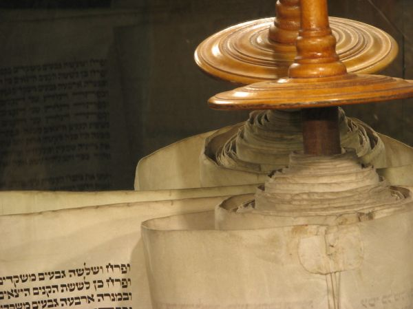

1 Word, 3 Meanings: Ruach Meaning Breath, Wind, and Spirit in Hebrew
You read one Hebrew word and your English Bible gives you three words for it.
You read one Hebrew word and your English Bible gives you three words for it. Breath. Wind. Spirit. That can feel odd at first. Read slow, and you will see why one word holds all three.
Ruach is a Hebrew word that can mean breath, wind, or spirit. Which one fits depends on the words around it in the verse. In Genesis 1:2 the KJV says the Spirit of God moved upon the face of the waters, and that word for Spirit is Ruach.
What the video shows: The video looks at Genesis 2:7 and asks what it means that God breathed into Adam's nose the breath of life. It goes back to the Hebrew words behind the English text. It talks about Ruach as spirit, wind, or breath, and about the breath of life that made man a living being. It also talks about a close word for breath of life and a word for a living being, and why these words help you see man's place in creation. It invites you to think about the gift of life from God, and how the breath in us comes from Him, not from us.
Where do you first meet the word Ruach in the Bible?
You meet Ruach at the very start. Genesis 1:2 says the earth was without form, and void. Void means empty. It says darkness was upon the face of the deep. Then it says, "the Spirit of God moved upon the face of the waters."
That word Spirit is Ruach in Hebrew. Hebrew is the old tongue in which the first part of the Bible was written. Ruach is written רוּחַ in Hebrew letters.
Moved upon means it was there, over the waters, at work, before God spoke light into being in the next verse. The picture is calm and strong. Before there was form, God's Spirit was there.
Hold that first use in mind. It sets the tone. Ruach is tied to God at work, to life, and to power you can not see with eyes but can see in what it does.
In English, we split ideas into neat boxes. We have one word for air we breathe. We have a new word for air that moves outside. We have a new word for the unseen power of God. In Hebrew, Ruach can hold all three. That does not mean the word is vague. It means the word is wide. The verse around it tells you which shade of the word fits that place.
Shade here means one part of a word's range. Think of the word light in English. Light can mean not dark. Light can mean not heavy. You know which one fits by the words near it. Ruach works in a like way, but with breath, wind, and spirit as its shades.
This post will walk through each shade, one by one. We will use plain Bible examples given in the texts. We will not make up new rules for Hebrew. We will just look at the word at work.

What does Ruach mean when it means breath?
Breath is the air a living thing takes in and lets out. You breathe all day and all night. If breath stops, life stops. That link between breath and life is at the heart of this shade.
Genesis 2:7 says God formed man of the dust of the ground. Then God breathed into his nostrils the breath of life, and man became a living soul. Nostrils are the two small holes in your nose where air goes in and out. A living soul here means a living being, a person who is alive.
The text ties life to breath from God. Man is made from dust, which has no life on its own. Life comes when God breathes. That is a plain, strong picture. Dust plus God's breath equals a living man.
You feel this truth in your own body. Hold your breath for ten counts. Your chest feels tight. Your body wants air. Let the air go and take a new breath. That want is not small. Your body knows it needs breath to live.
Think of breath like this first way. A balloon has no shape till you blow air into it. The rubber is there, flat and still. Your breath fills it, and it takes shape and can float and move. In a like way, the dust form in Genesis 2 was there, but life came with God's breath. The form did not make its own life.
Think of breath a second way, in a new picture world. A fire in a hearth can die down to coals. You lean in and blow soft air on the coals. The coals glow red again, and flame comes back. Your breath did not make the wood, but it woke the fire. God's breath in Genesis 2 is far more than that, but the picture helps. Breath brings what is still to life and glow.
When Ruach or its close breath words point to the air in the nose and lungs that keeps a being alive, English Bibles often use the word breath. You know it fits because the verse talks about nostrils, lungs, life, or death when breath leaves.
For your own read, mark Genesis 2:7. Write next to it: breath equals life from God. That note will help you each time breath comes up in Genesis.
What does Ruach mean when it means wind?
Wind is moving air you feel but do not see. You see what wind does. It bends trees. It lifts dust. It pushes water. You do not see the air itself as it moves past.
The Red Sea story gives a clear case. Exodus 14 tells how God's people were trapped between an army and the sea. Verse 21 says God caused the sea to go back by a strong east wind all that night. The wind made the sea dry land, and the waters were split in two.
Here Ruach fits as wind. The words around it tell you. East is a side of the sky where the sun rises. Strong tells you the force. All that night tells you it blew for hours. The sea moved because air moved, by God's hand.
Wind in the Bible is often God's tool. He sends it. It does His work in the seen world. It can dry ground. It can drive water back. It can bring cool air in heat. You can not hold wind in your hand, but you can see its fruit.
Think of wind like this first way. You stand by the sea on a hot day. You feel cool air hit your face. Your shirt flaps. The top of the water breaks into small waves. You say, the wind is up. You did not see air travel from far away. You felt it and you saw what it did. That is how the Exodus text wants you to see it too. A strong east wind blew, and dry ground showed up where water had been.
Think of wind a second way. A kite sits on the grass. It can not fly on its own. A gust comes, you run a few steps, and the kite lifts and pulls at the string. The lift is real, though the gust is not seen. In Exodus, the wind is God's gust at sea scale. It lifts and parts water no man could part by hand.
When the verse talks about east or west, about blowing, about sea or trees or dust moving, Ruach as wind is the shade that fits. The words around it are your guide. East wind in Exodus 14:21 is as clear as a case can be.
What does Ruach mean when it means spirit?
Spirit is the unseen living power of God. You can not see spirit as you see a stone. You see what God's Spirit does. He gives life. He moves at creation. He is at work in the world God made.
Genesis 1:2 is the key text for this shade. The Spirit of God moved upon the face of the waters. Face here means the top or surface. The waters are the deep waters at the start, before dry land showed. God's Spirit was there, over it all, before the first day's light.
That tells you God's Spirit is not a new idea late in the Bible. He is there in the second verse of the first book. Creation starts with God and His Spirit at work.
Spirit as a shade also helps you see why breath and wind are in the same word. Breath is unseen air that gives life to a body. Wind is unseen air that moves with power in the world. Spirit is God's unseen power that gives life and moves in His world. The three shades share one root idea: unseen moving power that brings life or change.
Here is the hardest idea in this post, so hear it twice in two picture worlds.
First, think of electricity in a house. You can not see the current in the wire. You flip a switch and light fills the room. You plug in a fan and cool air moves. You know the power is there by what it does. God's Spirit is not electricity, and He is a person in the Bible's teaching, not a force alone. But the picture helps with the unseen part. Unseen does not mean not real. It means you know it by its work.
Second, think of a song played on a flute. The flute is wood with holes. No song comes out till air moves through it. The air is breath from the player. You hear the song, though you do not see the air. The song proves the breath is there and at work. In a like way, life and order in creation prove God's Spirit was at work in Genesis 1. You see the fruit, though you do not see the Spirit Himself with your eyes.
Both pictures aim at one point. Ruach as Spirit names God's living, unseen power at work. You trust it is there because the Bible says He was there, and you see the world He made alive and ordered.
Do not add more than the texts say. The three shades and the examples in this post are the teaching here. Genesis 1:2 for Spirit at creation. Genesis 2:7 for breath of life. Exodus 14:21 for wind parting water. Those three pegs hold the word study firm.

How do you know which meaning fits in a verse?
You know by the words around Ruach in that verse. That is the plain rule. Context is the words and facts near a word that show what it means there. Context is not a hard idea. You use it each day.
If you hear the word bank, you need context. Bank can mean the side of a river. Bank can mean a place that holds money. If a friend says, I sat on the bank and watched the river, you know it is river side. If he says, I went to the bank to cash a check, you know it is money place. Same word, two shades, context tells you.
Ruach works the same way. Look at the near words.
If the verse says nostrils, breath of life, living, or dying when breath leaves, the shade is breath. Genesis 2:7 fits here.
If the verse says east, strong, blew all night, sea went back, or trees bend, the shade is wind. Exodus 14:21 fits here.
If the verse says of God, moved upon the waters at creation, or God's power at work to give life and order, the shade is Spirit. Genesis 1:2 fits here.
Read the whole verse. Read the verse before and after too. Ask: Is this about a body breathing? Is this about air moving outside? Is this about God's own power at work? The text will most often make it clear.
Go slow at first. That is fine. Word study is not a race. Mark each Ruach verse you find with a small B, W, or S in your notes for breath, wind, or spirit. After a few chapters, you will spot the shade fast, because the near words will jump out at you.
One last care. English Bibles do not all use the same English word in each place, but the KJV in Genesis 1:2 uses Spirit, and that is a true fit for that verse. Trust the context check more than a guess. Let the verse teach you its own shade.
Checklist:
- Read Genesis 1:2 and write: Ruach here is Spirit, God's Spirit over the waters
- Read Genesis 2:7 and write: breath in nostrils is life from God, man became a living being
- Read Exodus 14:21 and write: Ruach here is wind, a strong east wind all night that parted the sea
- For each verse, list the near words that told you which shade fits
- Say the three shades out loud in order: breath, wind, spirit, and give one verse for each
Your free tool for this step
Your free tool for this step is the Companion Pack at https://therightway.life/tools/companion-pack.html
The Companion Pack gives you study help to go with your chapter reads. It is made to sit next to your Bible as you read, so you can keep word notes, verse notes, and key facts in one place while you learn words like Ruach.
Use it like this:
- Go to https://therightway.life/tools/companion-pack.html
- Open the pack and find a place for word notes.
- Write Ruach at the top of a page and write its three shades: breath, wind, spirit.
- Under each shade, write its verse: Genesis 2:7 for breath, Exodus 14:21 for wind, Genesis 1:2 for Spirit.
- Next time you meet Ruach in your read, add the new verse under the right shade and note the near words that helped you choose.
What the tool does not do: It does not do the read for you, and it does not pick the shade for you. You still need to read the verse and its near words yourself. It also does not add new Hebrew rules beyond what your Bible text shows.
This work is kept free for every reader, and some readers give toward the labor of making it. There is no charge to use the Companion Pack, and the study on this site is free for all.
The bottom line
Ruach is one Hebrew word with three shades: breath, wind, and spirit. Breath is the air of life in the nose, as in Genesis 2:7. Wind is moving air God sends, as in the strong east wind in Exodus 14:21. Spirit is God's unseen living power, as in Genesis 1:2 over the waters. You know which shade fits by the words around it. Learn those three verses well, and this one word will open up many more verses as you read on.